Triangular Automata
Mathematica Package
Triangular Automata (TA) stands for cellular automata in the triangular grid. This Mathematica notebook introduces the topic while demonstrating the functionalities of the Triangular Automata package.
Download this notebook: https://github.com/paulcousin/triangular-automata-mathematica
More information: https://paulcousin.github.io/triangular-automata
Paul Cousin
https://orcid.org/0000-0002-3866-7615
Setup
Run the following command to import the package from the URL https://paulcousin.github.io/triangular-automata-mathematica/TriangularAutomata.wl .

Introduction
Cellular automata in the triangular grid, or Triangular Automata (TA) for short, have already been studied in a few papers [1-17]. This work will focus on a natural subset of TA called Elementary Triangular Automata (ETA).

ETA cells hold only binary states, each cell will thus either be:
“alive” and colored purple , with a state s = 1
“dead” and colored white  , with a state s = 0
, with a state s = 0
ETA rules determine the future state of a cell based on its current state and the states of its neighbors, regardless of their orientation. This results in only 8 possible local configurations. They can be plotted with TAConfigurationPlot.

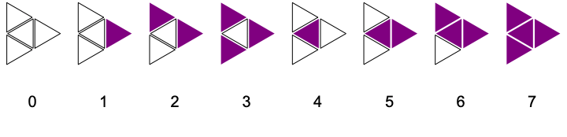
The package uses a graph-theoretical framework developed in a previous work on Graph-Rewriting Automata [20]. The triangular grid will here be considered as a graph. This graph must be expanded at each time step to simulate an infinite grid. The region of influence of a single cell grows in hexagonal layers. This is thus the most efficient way to expand the graph as well.
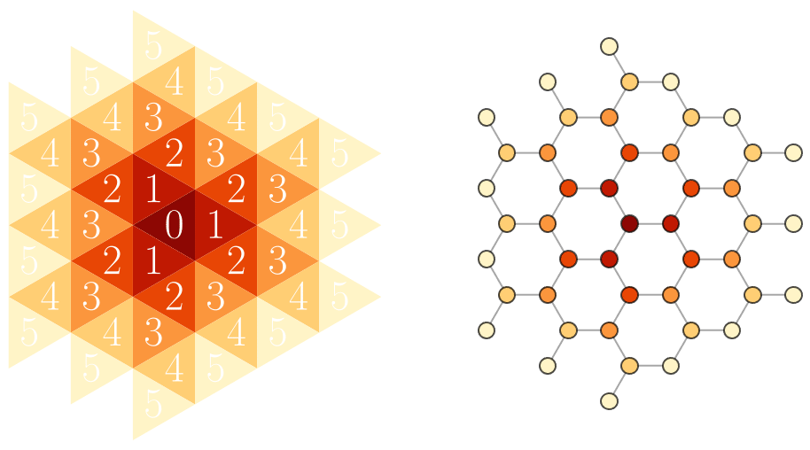
It is useful to see the triangular grid as a graph because computing the evolution of ETA is made quite easy by properties of its adjacency matrix A and state vector S. Every vertex v of this graph will hold a state s(v). The neighborhood N(v) of a vertex is defined as the set of its adjacent vertices.
 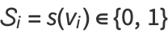
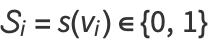
The configuration c(v) of a vertex is a number which, when they are indexed as we previously did, can be expressed as follows:

The space of possible ETA rules is finite. For each one of the 8 configurations, a rule must specify whether the vertex will be dead or alive at t+1. Consequently, there are only 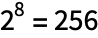 possible rules. For this reason, ETA can be seen as the two-dimensional counterpart of Wolfram’s 256 Elementary Cellular Automata [18-19]. Furthermore, the triangle is the regular polygon tiling 2D space with the smallest number of neighbors per cell. ETA are thus the most basic 2D cellular automata and have a fundamental aspect in this regard.
Each rule R is a map from configuration space to state space.
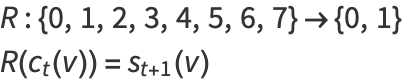
Each rule can be labeled by a unique rule number n. We will use the labeling system which was independently proposed in references [9] and [20], since it must be somewhat natural and because it has useful properties.
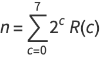
This system, inspired by the Wolfram code [18], is such that a rule number in its binary form displays the behavior of the rule. Starting from the right, its digits indicate the future state for each configuration as they have been ordered previously. Rules can be plotted with the TARulePlot function.

| 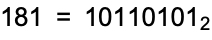 |
| 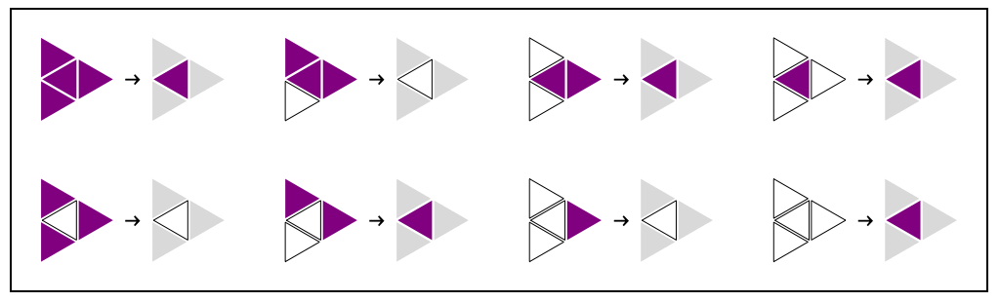 |
Functions
Starting Points
Grids have a special format. They are captured in a list with three elements: a precursor of the adjacency matrix, a state vector and a coordinates vector. The first two are in the SparseArray format.
To simplify things, this package provides few starting points ready to use:
TAStartOneAlive: a grid with only one alive cell at the center
TAStartLogo: a grid with a logo that contains all 8 local configurations.

TAStartRandom[n,d]: a grid with cells that are randomly either alive or dead on n layers, with density d (0.5 by default).
Edit
With the TAEdit function, you can edit a grid in a pop-up window.
Evolution
We can evolve these grids with different rules using the function TAEvolve. Let’s try to evolve a single living cell with rule 181.

As expected from the earlier plot of rule 181, the environment has become alive and we have three dead cells surrounding a central alive cell. It would be nice to see what will happen after that. The function TANestEvolve can be used to jump ahead several time steps. Let’s look at what TAStartOneAlive will look like after 64 time steps of evolution with rule 181.
Grids wider than 64 layers will not be rendered. You can use TAGridPlot to render them.

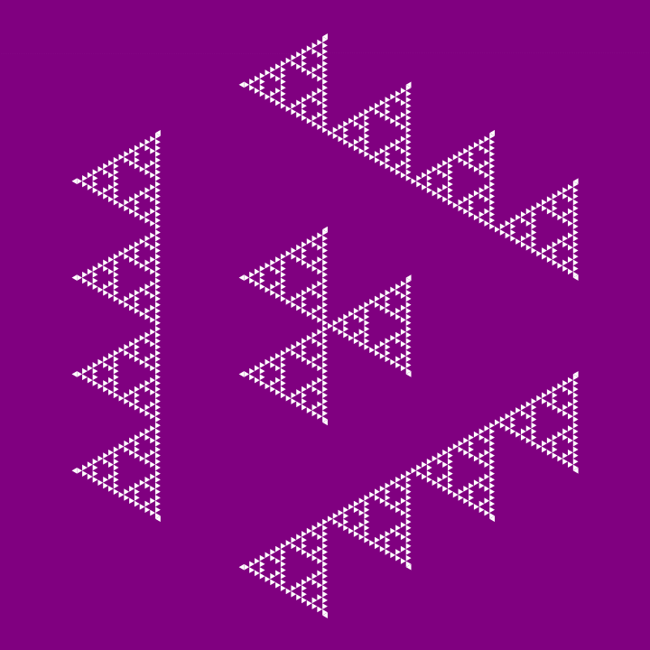
With this function, all the intermediate steps are lost and we only get the last grid. TANestListEvolve returns a list with all the intermediate steps.
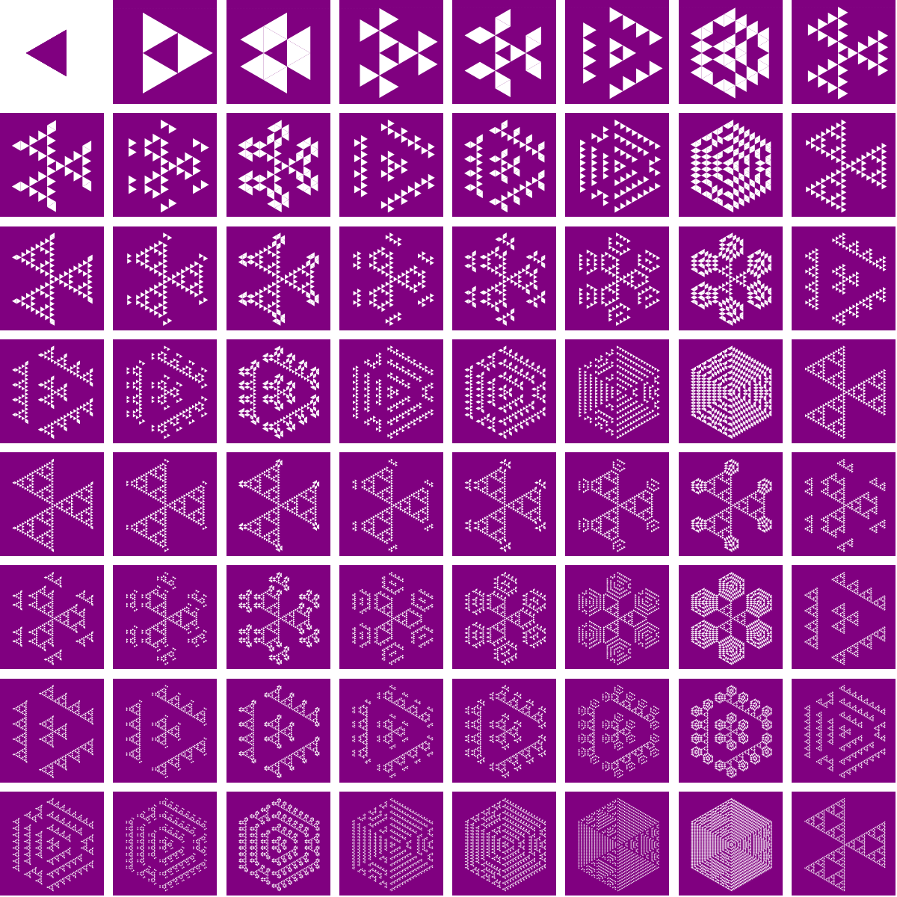
TAEvolutionPlot shows an animated version of what we have just computed.
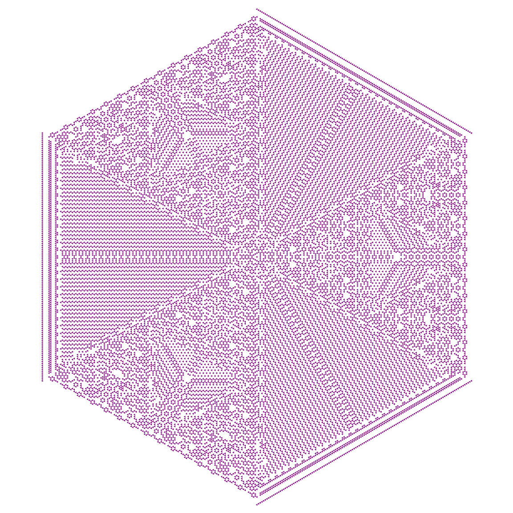
TAEvolutionPlot3D[start,rule,steps] creates a 3-dimensional space-time plot.
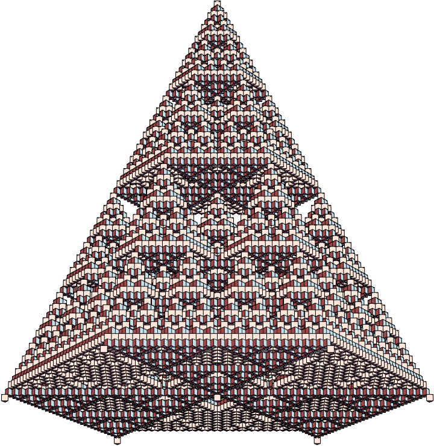
These plots can be exported to 3D software like Blender with the following code:
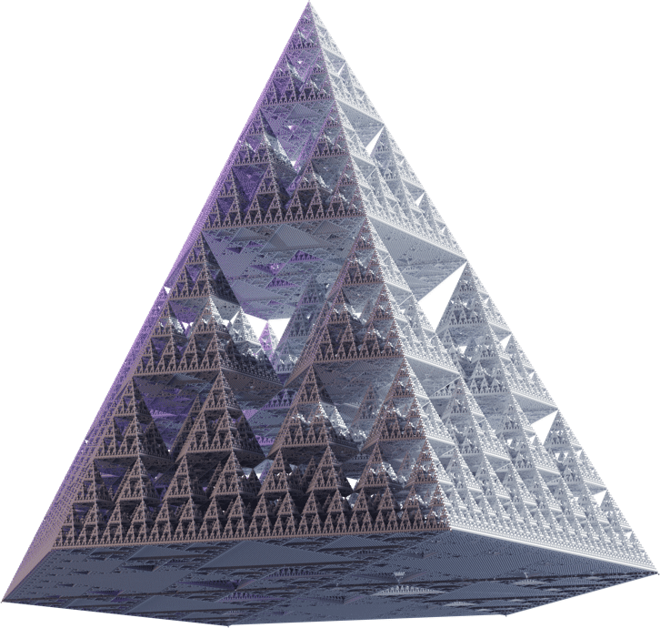
Alternating Rules
In the functions that use nested evolution, you can always provide a list of rule numbers through which the functions will go one by one.
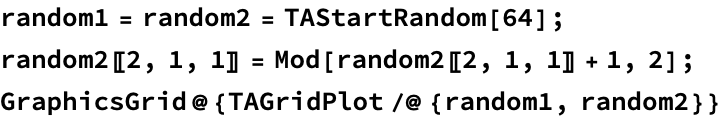
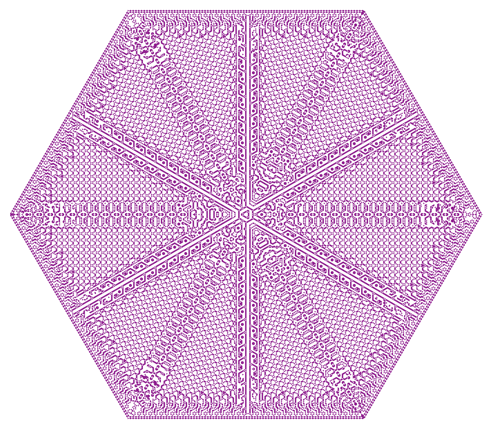
Twin Rules
TANegativeGrid returns the negative of a grid and TANegativeRule returns the number of the twin rule that have the same effect but in the negative world.
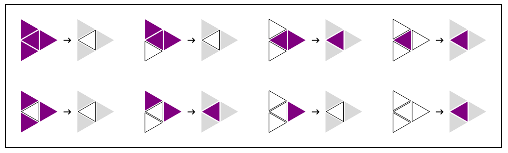
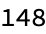
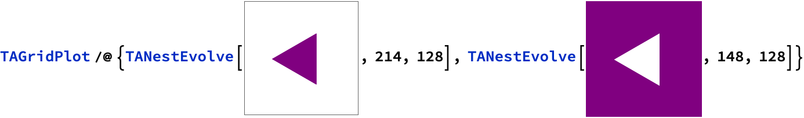
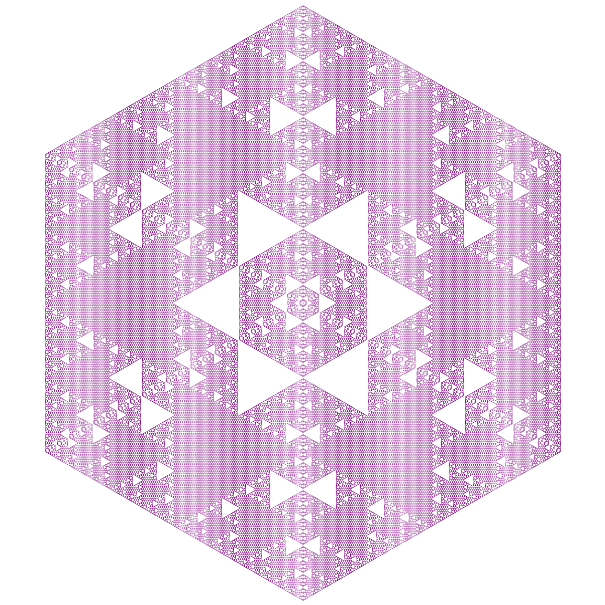
Center Columns
The center column produced over the iterations of a rule can be efficiently computed with the functionTACenterColumn.
You can specify the starting grid for this computation.
The center columns can be displayed in a square plot to make some properties of their structure apparent.
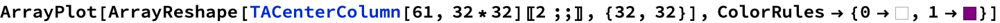
The two first layers of a grid starting with one living cell will remain uniform. The function TACenterColumn returns their states as well.
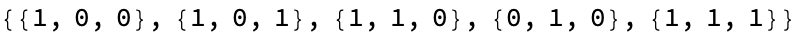
These states can be plotted with RBG colors.
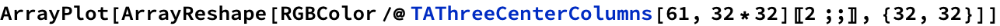
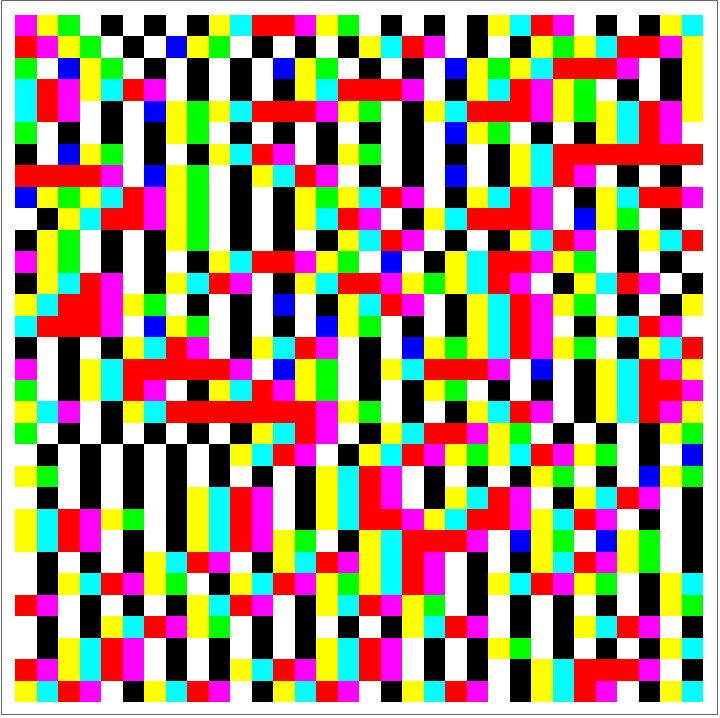
Final Thoughts
If you want to delve deeper into the mathematics behind this work, you can read the related paper: https://arxiv.org/abs/2309.15795
I hope you will enjoy this package. Share what beautiful or interesting things you find with it!
References
[1] R. W. Gerling, “Classification of triangular and honeycomb cellular automata,” Physica A: Statistical Mechanics and its Applications, vol. 162, no. 2, pp. 196–209, Jan. 1990.
[2] C. Bays, “Cellular Automata in the Triangular Tessellation,” 1994.
[3] K. Imai and K. Morita, “A computation-universal two-dimensional 8-state triangular reversible cellular automaton,” Theoretical Computer Science, vol. 231, no. 2, pp. 181–191, Jan. 2000
[4] L. Naumov, “Generalized coordinates for cellular automata grids,” in International Conference on Computational Science, Springer, 2003, pp. 869–878.
[5] C. Bays, “Cellular Automata in Triangular, Pentagonal and Hexagonal Tessellations,” in Encyclopedia of Complexity and Systems Science, 2009, pp. 892–900.
[6] Y. Lin, A. Mynett, and Q. Chen, “Application of Unstructured Cellular Automata on Ecological Modelling,” in Advances in Water Resources and Hydraulic Engineering, Berlin, Heidelberg: Springer Berlin Heidelberg, 2009, pp. 624–629. doi: 10.1007/978-3-540-89465-0_108.
[7] C. Bays, “The game of life in non-square environments,” in Game of Life Cellular Automata, Springer, 2010, pp. 319–329.
[8] B. Breckling, G. Pe’er, and Y. G. Matsinos, “Cellular automata in ecological modelling,” in Modelling Complex Ecological Dynamics: An Introduction into Ecological Modelling for Students, Teachers & Scientists, Springer, 2011, pp. 105–117.
[9] M. Zawidzki, “Application of Semitotalistic 2D Cellular Automata on a Triangulated 3D Surface,” Int. J. DNE, vol. 6, no. 1, pp. 34–51, Jan. 2011, doi: 10.2495/DNE-V6-N1-34-51.
[10] G. M. Ortigoza, A. Lorandi, and I. Neri, “ACFUEGOS: An Unstructured Triangular Cellular Automata for Modelling Forest Fire Propagation,” in High Performance Computer Applications, I. Gitler and J. Klapp, Eds., in Communications in Computer and Information Science, vol. 595. Cham: Springer International Publishing, 2016, pp. 132–143. doi: 10.1007/978-3-319-32243-8_9.
[11] M. Saadat, “Cellular Automata in the Triangular Grid,” 2016.
[12] S. Uguz, S. Redjepov, E. Acar, and H. Akin, “Structure and reversibility of 2D von Neumann cellular automata over triangular lattice,” International Journal of Bifurcation and Chaos, vol. 27, p. 1750083, 2017.
[13] M. Saadat and B. Nagy, “Cellular Automata Approach to Mathematical Morphology in the Triangular Grid,” ACTA POLYTECH HUNG, vol. 15, no. 6, pp. 45–62, 2018, doi: 10.12700/APH.15.6.2018.6.3.
[14] G. A. Wainer, “An introduction to cellular automata models with cell-DEVS,” in 2019 Winter Simulation Conference (WSC), IEEE, 2019, pp. 1534–1548.
[15] A. V. Pavlova, S. E. Rubtsov, and I. S. Telyatnikov, “Using cellular automata in modelling of the fire front propagation through rough terrain,” IOP Conf. Ser.: Earth Environ. Sci., vol. 579, no. 1, p. 012104, Oct. 2020, doi: 10.1088/1755-1315/579/1/012104.
[16] M. R. Saadat and B. Nagy, “Generating Patterns on the Triangular Grid by Cellular Automata including Alternating Use of Two Rules,” in 2021 12th International Symposium on Image and Signal Processing and Analysis (ISPA), Zagreb, Croatia: IEEE, Sep. 2021, pp. 253–258. doi: 10.1109/ISPA52656.2021.9552107.
[17] M. R. Saadat and N. Benedek, “Copy Machines - Self-reproduction with 2 States on Archimedean Tilings,” 2023.
[18] S. Wolfram and others, A New Kind Of Science, vol. 5. Wolfram media Champaign, IL, 2002.
[19] E. W. Weisstein, “Elementary Cellular Automaton”, [Online]. Available: https://mathworld.wolfram.com/ElementaryCellularAutomaton.html
[20] P. Cousin and A. Maignan, “Organic Structures Emerging From Bio-Inspired Graph-Rewriting Automata,” in 2022 24th International Symposium on Symbolic and Numeric Algorithms for Scientific Computing (SYNASC), Hagenberg / Linz, Austria: IEEE, Sep. 2022, pp. 293–296. doi: 10.1109/SYNASC57785.2022.00053.